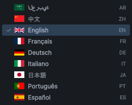
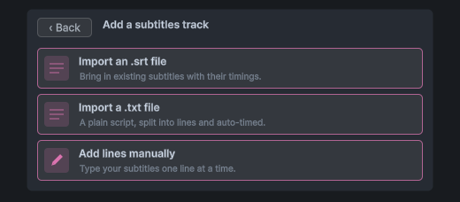
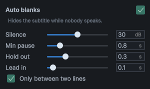
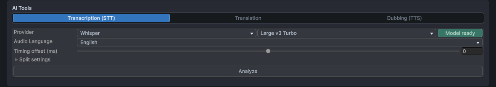
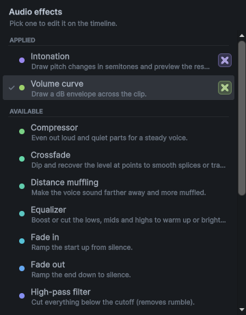
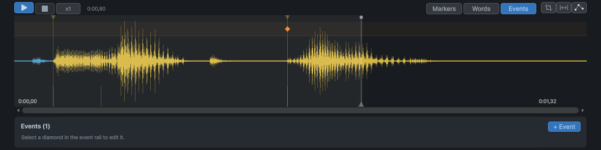

SubVox Pro
SubVox Pro transforme vos répliques en sous-titres synchronisés et en doublages, directement dans Unity :
- Transcrivez un clip audio en sous-titres horodatés, avec un service en ligne ou entièrement hors connexion.
- Ajustez le timing sur une forme d’onde, stylisez les mots et vérifiez la vitesse de lecture.
- Traduisez dans 50 langues et doublez par synthèse vocale, si besoin avec la voix de chaque personnage.
- Jouez le résultat en jeu avec quelques composants, déclenchez des événements de gameplay depuis une réplique et placez vos répliques sur la Timeline Unity.
Les boutons et les champs sont cités en anglais, tels qu’ils apparaissent dans Unity. Le guide et la référence d’API existent en français sur ce site ; le PDF livré avec le plugin est en anglais.
Sommaire
- Avant de commencer
- Démarrage rapide
- La fenêtre SubVox Pro
- Transcrire
- Traduire
- Doubler par synthèse vocale
- Speakers et personnalités vocales
- Modifier l’audio
- Jouer des voicelines dans votre jeu
- Déclencher du gameplay depuis une voiceline
- Timeline Unity
- Traiter plusieurs fichiers à la fois
- Travailler avec votre assistant IA
- Moteurs locaux, sans compte ni clé API
- Traduction humaine avec Google Sheets
- Réglages
- Clavier et souris
- Langues prises en charge
- Vos données et les services en ligne
- Voix générées par IA dans votre jeu
- Emplacement de vos fichiers
- Mettre à jour et désinstaller
- Dépannage
- Support
La création des comptes et des clés API est expliquée étape par étape dans le guide des fournisseurs.
Avant de commencer
- Unity 2022.3 LTS ou plus récent, y compris Unity 6, avec n’importe quel pipeline de rendu : Built-in, URP ou HDRP.
- TextMesh Pro : importez TMP Essentials une fois si ce n’est pas déjà fait. Avec Unity 2022.3, installez d’abord le package TextMeshPro depuis le Package Manager. Unity 6 l’inclut déjà.
- Unity Timeline est facultatif : les fonctions Timeline apparaissent dès que son package est installé.
- En jeu, SubVox Pro fonctionne sur toutes les plateformes prises en charge par Unity.
- Dans l’éditeur, SubVox Pro est testé sous Windows. Les services en ligne, avec vos propres clés API, devraient aussi fonctionner sous macOS et Linux, mais n’y ont pas encore été testés. Les moteurs locaux (transcription, traduction et doublage sans compte) demandent l’éditeur Windows.
Démarrage rapide
D’un clip audio à des sous-titres synchronisés, en quelques minutes.
Tools ▸ SubVox Pro ▸ Hub regroupe tous les outils en neuf tuiles : éditeur de voicelines, traitement par lot, Google Sheets, comparaison des fournisseurs, modèles locaux supplémentaires, scène d’exemple, documentation, configuration des fournisseurs et réglages.

La tuile Documentation propose deux choix, Online et Local. Online ouvre ce site (guide, fournisseurs et référence d’API), en anglais ou en français. Local ouvre le PDF anglais, lisible hors connexion. Back revient à l’accueil. La tuile Provider Setup ouvre ce même PDF directement à sa partie consacrée aux fournisseurs.

1. Choisissez comment transcrire. Collez la clé API d’un service de transcription dans Tools ▸ SubVox Pro ▸ Settings (obtenir une clé), ou utilisez sous Windows Whisper ou Parakeet, gratuits et hors connexion. Ils proposent de télécharger leur modèle à la première utilisation.
2. Créez une voiceline. Assets ▸ Create ▸ SubVox Pro ▸ Voice Line, puis sélectionnez l’asset et cliquez sur Set Up Voice Line dans l’Inspector. Vérifiez Language : anglais la première fois, puis la dernière langue choisie. Cliquez sur Add an audio track pour choisir un clip ou en enregistrer un.
Vous pouvez aussi faire un clic droit sur un fichier audio dans la fenêtre Project, puis choisir SubVox Pro ▸ Set Up Voice Line. Choisissez où enregistrer la nouvelle voiceline : l’éditeur s’ouvre avec ce clip audio déjà renseigné.

3. Transcrivez. Dans AI Tools ▸ Transcription, choisissez le fournisseur et la langue parlée, cliquez sur Analyze, puis sur Split. Les sous-titres apparaissent sur la forme d’onde.
4. Ajustez. Déplacez les marqueurs, corrigez le texte dans la liste et appuyez sur Space pour écouter.
5. Affichez le résultat en jeu. Placez les prefabs [SubVox Pro] et Subtitle Displayer
(SubVoxPro/Prefabs) dans votre scène, puis jouez la réplique :
using SubVoxPro;
SubVox.Play(myVoiceLine);
Pour un exemple complet, ouvrez Examples dans le Hub (ou Tools ▸ SubVox Pro ▸ Example Scenes) et appuyez sur Play. Trois scènes — un temple en 3D, une station néon en 2D et un visual novel noir — montrent des voicelines en quatre langues, des bulles, des séquences de dialogue, des events de voix et les options de sous-titres.
La fenêtre SubVox Pro

Ouvrez-la avec Tools ▸ SubVox Pro ▸ Voice Line Editor ou Set Up Voice Line dans l’Inspector d’une voiceline. De haut en bas :
- Voice Line Data : la voiceline en cours, avec les boutons pour en créer une, parcourir les autres, la découper ou la supprimer. Le point coloré est son tag, qui apparaît aussi sur son icône dans la fenêtre Project.
- Source : les sélecteurs AUDIO et SUBTITLES. Chaque voiceline a une langue source, représentée par un drapeau, et une piste par langue traduite ou doublée. Les deux sélecteurs sont indépendants : vous pouvez afficher les sous-titres français sur l’audio anglais.
- AI Tools : transcription, traduction et doublage (voir ci-dessous).
- Timeline : la forme d’onde et les marqueurs de sous-titres. Chaque marqueur indique le début d’un sous-titre ; un marqueur sans texte, appelé blank, efface l’affichage.
- Live preview : le sous-titre à la position de lecture, tel qu’il apparaîtra en jeu. Choisissez une couleur ou un style, puis glissez sur les mots pour les appliquer. Glisser avec le bouton droit les retire.
- Subtitles : une ligne par sous-titre, avec son nom, sa durée, son speaker, son texte et un bouton de lecture.
Tags et langues
Cliquez sur le tag à côté de Voice Line Data pour choisir sa couleur et sa forme. Clear tag le retire. La forme permet de distinguer les voicelines sans se fier uniquement à leur couleur. Cliquez sur A-Z ou 0-9 pour utiliser une lettre ou un chiffre comme forme.

Cliquez sur le drapeau source pour choisir la langue parlée. Les drapeaux représentent des langues, pas la nationalité des personnages. Le sélecteur indique aussi le nom de chaque langue et son code.

Commencer sans audio

Une voiceline peut commencer par du texte. Choisissez Add a subtitles track, puis importez un .srt avec ses timings, un .txt avec un sous-titre par ligne, ou saisissez les lignes vous-même. Pour un TXT, les durées sont calculées pour laisser le temps de lire. Réglez Length : c’est la durée de lecture de la voiceline en jeu tant qu’elle n’a ni audio ni doublage.
Enregistrer de l’audio

Record with a microphone, dans Add an audio track ou dans le + du sélecteur AUDIO, ouvre un enregistreur. Choisissez le microphone, surveillez le niveau, enregistrez, réécoutez, puis cliquez sur Use recording. La prise est enregistrée en WAV à côté de la voiceline. Sur macOS, autorisez Unity à utiliser le microphone dans les Réglages Système.
Vérifier vos sous-titres
- Show CPS, dans les réglages, affiche la vitesse de lecture et signale les lignes trop rapides.
- Check Subtitles, affiché avec Show CPS, parcourt les problèmes un à un : noms vides ou en double, lignes hors du clip, chevauchements, texte trop rapide. Chaque correction proposée peut être annulée.
- Auto blanks masque le texte quand personne ne parle, sans ajouter de marqueurs. Activez-le dans son popup et choisissez la durée minimale du silence. Les parties masquées sont ombrées sur la forme d’onde.
- Export SRT enregistre les sous-titres dans un fichier
.srt.

Silence définit l’écart de volume nécessaire entre une pause et la voix pour que cette pause soit considérée comme un silence. Min pause ignore les silences trop courts. Hold out conserve brièvement le texte après l’arrêt de la voix, et Lead in le fait réapparaître avant la reprise. Only between two lines évite de masquer puis de réafficher un sous-titre au milieu de sa phrase.
Supprimer une voiceline
Le bouton corbeille supprime la voiceline et affiche la liste des fichiers qui lui sont associés. Les fichiers générés par SubVox Pro, comme les doublages et les enregistrements, sont cochés ; vos fichiers d’origine ne le sont pas. Un fichier encore utilisé ailleurs est verrouillé. Les fichiers partent dans la corbeille du système : rien n’est perdu définitivement.
Découper une voiceline
Quand une voiceline contient plusieurs moments à jouer séparément, le bouton de découpe (à côté de la corbeille) la sépare en plusieurs voicelines. Cliquez entre deux sous-titres pour couper à cet endroit, ajoutez autant de coupes que nécessaire, puis nommez les nouvelles voicelines. Une coupe tombe toujours entre deux sous-titres, dans la pause qui les sépare.
Chaque partie garde tout ce qui appartient à ses sous-titres : audio, traductions, doublages, speakers, effets audio et events. La première partie reste dans la voiceline actuelle, donc vos scènes et vos Timelines pointent toujours vers elle ; les autres parties sont créées à côté. Chaque partie reçoit ses propres fichiers audio, et vos fichiers d’origine sont conservés. Une découpe ne peut pas être annulée.
Transcrire

- Choisissez un Provider et, s’il en propose plusieurs, un Model. Le badge indique si le fournisseur est prêt : clé enregistrée ou modèle téléchargé.
- Réglez Audio Language. Certains fournisseurs détectent eux-mêmes la langue.
- Cliquez sur Analyze pour obtenir les mots et leurs timings.
- Cliquez sur Split pour regrouper les mots en sous-titres. Split settings règle la durée maximale, l’avance avant le premier mot et la coupure sur la ponctuation.
Word timing permet de choisir la source des timings de mots. From the provider, par défaut, conserve celui de la transcription. Qwen3 aligner (local) recale chaque mot sur l’audio après Split, sans modifier le texte : c’est le choix le plus précis pour l’affichage mot par mot (installation). Si Qwen3 ne prend pas la langue en charge, les timings du fournisseur sont conservés.
Fournisseurs : AssemblyAI, Gladia, Deepgram, Speechmatics, ElevenLabs, Rev AI, OpenAI, ou Whisper et Parakeet hors connexion. Tools ▸ SubVox Pro ▸ Provider Comparison compare prix, offre gratuite, utilisation commerciale et langues.

OpenAI gpt-transcribe renvoie du texte sans timing par mot ; les timings sont estimés sur le clip. Utilisez l’alignement local ou un fournisseur avec horodatage des mots lorsque le timing compte.
La transcription porte sur la piste choisie dans le sélecteur AUDIO, ce qui permet aussi de transcrire un doublage.
Traduire

- Choisissez un Provider : DeepL, Google Translate, OpenAI, Claude, Gemini, DeepSeek ou Hy-MT2 local.
- Cochez une ou plusieurs langues Target, ou choisissez un preset, pour traduire vers plusieurs langues à la fois.
- Réglez Formality pour choisir un registre formel ou familier (vouvoiement ou tutoiement, par exemple), si la langue le permet.
- Cliquez sur Translate. Chaque langue obtient sa piste dans le sélecteur SUBTITLES.

Dans le popup Target, cochez autant de langues que vous voulez à gauche, puis Save as preset à droite pour les réutiliser. Sélectionnez un preset pour traduire vers toutes ses langues en une seule opération ; la colonne de droite modifie son nom et ses langues.
Donnez du contexte. Si une phrase est ambiguë, écrivez un contexte global avec le bouton bulle de la voiceline, et au besoin une note sur la ligne concernée avec son propre bouton bulle dans la liste.
Gardez les traductions à jour. Quand le texte source change, les traductions affichent OUT. Synchronize ne retraduit que les lignes modifiées ; cliquez sur le badge si vous avez vérifié la ligne vous-même. Si vous déplacez les marqueurs et coupez une phrase autrement, le badge CUT apparaît : Fix splits demande alors à un fournisseur IA de redécouper la traduction en respectant le sens du découpage source, sans changer ses mots. Les doublages sont mis à jour automatiquement.
Doubler par synthèse vocale

- Sélectionnez la langue à doubler dans SUBTITLES.
- Dans AI Tools ▸ Dubbing, choisissez un Provider et une Voice. Le bouton ▶ permet d’écouter un extrait de la voix. Use speakers' voices prend la voix du speaker de chaque ligne.
- Choisissez Generation :
- Each subtitle : une prise par sous-titre, facile à corriger ligne par ligne.
- Per speaker : une prise par suite de lignes du même personnage, pour un enchaînement plus naturel.
- All together : une seule prise, la plus fluide, mais qu’il faut régénérer en entier.
- Groups : vous choisissez quels mots sont dits d’une seule prise (voir ci-dessous).
- Cliquez sur Generate audio. Le doublage est ajouté comme nouvelle piste audio et se joue à la place de l’original quand cette langue est active.
Mode Groups. Choisir Groups active l’outil Groups au-dessus de la forme d’onde. Chaque groupe est dit d’une seule prise, avec la voix et la personnalité de son premier mot, et le texte des sous-titres prend la couleur du groupe. Au départ, un seul groupe contient tout. Glissez dans un groupe pour le couper en trois, le nouveau groupe au milieu : il peut commencer ou finir au milieu d’une ligne, et chaque nouveau groupe reçoit sa propre couleur. Glissez la limite entre deux groupes pour la déplacer : la pousser au-delà d’un groupe entier le supprime, et revenir en arrière avant de relâcher le rétablit. Un clic droit sur un groupe le supprime : son voisin prend sa place. Le bouton corbeille fusionne tout en un seul groupe. Les groupes sont enregistrés par langue de sous-titres.
Fournisseurs : InWorld, ElevenLabs, Gemini, OpenAI, Google Cloud, Azure, et les moteurs locaux Kokoro (anglais), Chatterbox (21 langues, en gardant la voix du personnage), Qwen3 TTS 1.7B (dix langues, clonage de références, voix fixes et descriptions de voix) et VoxCPM2 (30 langues, clonage avec consignes de jeu, et voix décrites).
- Word timing : Qwen3 aligner (local) affiche les mots au moment exact où ils sont prononcés (installation). Estimated suffit si vous n’affichez pas les mots un à un.
- Voice direction : le bouton bulle à côté de la voix transmet une indication de jeu (calm, whispering…) aux fournisseurs qui la prennent en compte.
- REGEN : ce badge orange signale qu’un doublage ne correspond plus au texte, à la voix ou à la personnalité. Survolez-le pour en voir la raison, cliquez dessus pour ne régénérer que ce qui a changé.
- Voice cloning : avec ElevenLabs (offre payante), Chatterbox, Qwen Base ou VoxCPM2, Original voice reprend la voix de chaque
personnage à partir de l’audio source. Un clip du dossier
Voicesde votre dossier de données fonctionne aussi. Ne clonez que des voix que vous avez le droit d’utiliser.
OpenAI et d’autres services exigent d’indiquer aux joueurs que les voix sont générées par IA. Consultez le guide des fournisseurs.
Speakers et personnalités vocales
Speakers

Un speaker représente un personnage : il définit le nom et la couleur à afficher devant ses sous-titres, ainsi que ses voix de doublage. Créez-le avec Assets ▸ Create ▸ SubVox Pro ▸ Speaker ou depuis le sélecteur de speaker.
- Le champ Speaker au-dessus de la liste vaut pour toute la voiceline ; celui d’une ligne ne concerne que ce sous-titre.
- Text-to-speech voices, dans son Inspector, fixe la voix pour chaque fournisseur : une voix par défaut pour toutes les langues et, au besoin, des exceptions par langue.
- Sur Subtitle Displayer ou Subtitle Document Displayer, Speaker Name Mode place le nom devant le texte (Inline), au-dessus (Above) ou le masque (Hidden). Un speaker peut aussi définir sa propre police : Font (TextMeshPro) ou Font (UI Toolkit) selon l’afficheur.
- Keep Background Between Subtitles, activé par défaut, laisse le panneau affiché, sans texte, pendant un blank entre deux sous-titres. Un blank avant le premier ou après le dernier masque toujours le panneau.

Le sélecteur regroupe les personnages par genre. Le crayon modifie un speaker existant ; New speaker en crée un. Sur une ligne, l’entrée du haut revient au speaker par défaut de la voiceline.
Personnalités vocales
Une personnalité est une direction de jeu réutilisable, comme Angry, Mysterious ou Whispering. Créez-la depuis un speaker avec New personality ou avec Assets ▸ Create ▸ SubVox Pro ▸ Voice Personality. Vous pouvez écrire librement les consignes de jeu ou les composer : une émotion et une manière de parler, leur intensité, puis le rythme, le volume, la hauteur de la voix et l’articulation. Cliquez sur son icône pour choisir l’un des quelque quarante symboles (émotions, humeurs, voix et personnage) : vous la reconnaissez ainsi d’un coup d’œil dans les listes.
Choisissez une personnalité avec le badge d’une ligne, en mode Each subtitle, ou utilisez la personnalité par défaut du speaker. Chaque fournisseur applique ce qu’il peut, sous la forme qu’il comprend : consigne écrite, balises audio ou styles de voix ; d’autres ne suivent que le rythme. Au survol, le badge indique ce que la voix choisie utilisera. Une personnalité règle la façon de jouer une ligne, pas qui parle : l’âge d’une voix fait partie de sa description (voir plus bas).
Modifier l’audio
Les boutons à droite de la barre Timeline modifient l’audio lui-même. Chaque modification s’annule avec Ctrl+Z.

Audio effects ouvre la liste des effets. Les effets déjà appliqués viennent en premier : sélectionnez-en un pour le modifier, ou cliquez sur sa croix pour l’annuler et le retirer.
- Crop : déplacez les poignées de début et de fin, puis cliquez sur Apply crop. Le fichier audio source est réécrit : gardez une copie de la prise complète si vous risquez d’en avoir besoin.
- Insérer une pause ou retirer un passage, bouton
|↔|: glissez avec le bouton gauche pour ajouter du silence, avec le bouton droit pour couper. Les sous-titres, mots et événements suivants se décalent avec l’audio. Pratique quand une voix de synthèse enchaîne deux phrases trop vite. - Audio effects : courbe de volume, fondus, normalisation, compresseur, limiteur, noise gate, filtres, égaliseur, téléphone/radio, hauteur, intonation, panoramique, étouffement à distance et réverbération. Dessinez où appliquer l’effet, réglez comment avec les curseurs, puis cliquez sur Apply effects. L’aimant aligne les points sur la valeur de base, zéro et leurs voisins ; maintenez Alt pour les placer librement. L’original est conservé pour que les effets restent modifiables. Flatten les rend définitifs, Discard les retire tous.
- Voice filter : transforme toute la voix en un clic : Telephone (téléphone), Radio / walkie-talkie (avec souffle et bips d’ouverture), Robot, Cathedral (cathédrale), Behind a door (derrière une porte), Monster (monstre) ou Inner voice (voix intérieure). Choisissez le filtre dans le menu Filter et réglez sa force avec Intensity. Le filtre couvre toute la ligne par défaut ; baissez sa courbe pour garder une partie de la ligne intacte. Cathedral résonne après chaque mot mais s’éteint à la fin du clip : laissez un court silence après le dernier mot pour entendre son écho.
- Intonation : la mélodie de la voix apparaît au-dessus. Dessinez dans la piste du bas le décalage positif ou négatif ; 0 conserve la voix. L’aimant suit le pas choisi (0,5 st par défaut) ; Alt permet un tracé libre. Le bouton à l’icône d’onde lisse les nouveaux tracés sur la durée choisie ; à zéro, le tracé est conservé tel quel. Glisser avec le bouton droit rétablit la voix et Esc annule le geste en cours. Le reste de l’audio n’est pas touché. Pitch décale tout un passage, avec la même mélodie affichée. Quelques demi-tons (st) donnent en général le meilleur résultat. Engine propose WORLD (par défaut, le plus naturel), PSOLA (plus léger) et Classic (le plus rapide, mais il modifie aussi le timbre).

Ici, la courbe baisse le volume de certains passages. La forme d’onde sert de repère dans le temps, et les points règlent le gain. 0 dB conserve le volume original.

La courbe supérieure montre la mélodie détectée. La piste inférieure contient votre modification en demi-tons : une valeur positive rend la voix plus aiguë, une valeur négative la rend plus grave et zéro conserve l’original. Les deux restent séparées pour bien distinguer la voix d’origine de vos changements.
Jouer des voicelines dans votre jeu
Préparer la scène
Placez le prefab [SubVox Pro], dans
SubVoxPro/Prefabs, une fois dans votre scène de démarrage. Il joue les voicelines et diffuse leurs événements. S’il manque, un lecteur par défaut est créé à la première lecture, avec un avertissement.Placez le prefab Subtitle Displayer : un panneau de sous-titres prêt à l’emploi en bas de l’écran, qui s’agrandit pour les longues lignes et se masque entre deux répliques. Adaptez police, couleur, position et taille, ou ajoutez le composant à votre Canvas et renseignez Subtitle Text, ainsi que Background pour masquer le fond.
Avec UI Toolkit plutôt qu’un Canvas, utilisez le prefab Subtitle Document Displayer. Il affiche les mêmes textes, noms et styles dans un UI Document. Modifiez
Subtitle Document.uss, dansSubVoxPro/Prefabs/UI/UI Toolkit, ou ajoutez le composant à votre propre UI Document et indiquez le nom du Label à remplir et de l’élément à masquer.
Jouer une réplique depuis un script
Tout passe par SubVox. Des scripts prêts à copier se trouvent dans SubVoxPro/Example/Snippets : attendre une réplique,
réagir à un événement, changer de langue, proposer des options, afficher un historique, sous-titrer une vidéo.
Votre éditeur de code décrit chaque classe, méthode et réglage pendant la saisie. La référence complète est en ligne,
version par version, et s’ouvre aussi depuis Documentation ▸ Online dans le Hub.
using SubVoxPro;
SubVox.Play(myVoiceLine); // lecture avec sous-titres synchronisés
SubVox.PauseAll(); // jeu en pause
SubVox.ResumeAll();
SubVox.StopAll(); // cinématique passée
SubVox.CurrentLanguage = "fr"; // sous-titres et doublages français, "" pour la source
Play renvoie la lecture en cours : vous pouvez consulter son State, son Time et son Progress, la mettre
en pause ou l’arrêter, écouter ses événements Completed / Interrupted, ou l’attendre dans une coroutine :
yield return SubVox.Play(greeting);
yield return SubVox.Play(answer);
SubVox.IsPlaying(line) indique si une réplique est en cours, SubVox.Stop(line) arrête cette seule réplique, et
SubVox.PlayAt(line, position) la fait entendre une fois en un point du monde, comme une voix de haut-parleur.
Pour afficher une réplique ailleurs (vidéo, menu), myVoiceLine.GetSubtitleAt(time, language) donne le sous-titre
à n’importe quel instant, et TryGetWordAt le mot prononcé.
Sur Voice Line Manager, Subtitle Reveal Mode affiche la ligne entière (par défaut), les mots un à un, ou le mode Karaoke, qui met en surbrillance le mot prononcé. Les cinématiques Timeline suivent le même réglage. Pour baisser la musique pendant les dialogues, renseignez deux snapshots d’Audio Mixer : Ducked Snapshot (musique baissée) et Normal Snapshot.
Voix en 3D et lectures simultanées
Ajoutez Voice Line Emitter à chaque personnage et réglez son AudioSource en 3D. La voix part du personnage, et plusieurs personnages peuvent parler en même temps.
npc.GetComponent<VoiceLineEmitter>().Play(barkLine, EVoiceLinePriority.Low);
Les priorités protègent les répliques importantes. Sur un émetteur, une nouvelle réplique ne remplace celle en
cours que si elle est au moins aussi importante. À l’écran, c’est le sous-titre de la plus importante qui s’affiche.
EVoiceLinePlayMode.Queue met la réplique en attente ; EVoiceLinePlayMode.IfIdle ne la joue que si l’émetteur
est libre. Skip() termine la réplique tout de suite et ClearQueue() vide la file d’attente. Désactivez
Show Subtitles pour les conversations de fond. VoiceLineCompleted et VoiceLineInterrupted signalent qu’une
lecture s’est terminée ou a été interrompue ; Paused / Resumed suivent les pauses. PlaybackSpeed accélère ou
ralentit les répliques.
Lip-sync. L’événement WordChanged d’un émetteur se déclenche à chaque nouveau mot prononcé (et entre les mots),
et CurrentWord contient le mot en cours : de quoi animer la bouche d’un personnage ou déclencher un geste.
emitter.WordChanged += word => mouth.SetBool("Talking", word.Text != null);
Bulles de dialogue. Sélectionnez un personnage et utilisez GameObject ▸ SubVox Pro ▸ Subtitle Bubble. Une bulle au-dessus de sa tête n’affiche que ses répliques. Désactivez Show Subtitles sur son émetteur pour ne pas les afficher aussi en bas de l’écran.
Sans code
- Voice Line Zone joue une réplique quand le joueur entre dans un trigger 2D ou 3D, une seule fois ou avec un cooldown entre deux déclenchements. Avec Play mode: Queue, elle attend la fin de la réplique en cours. La zone peut aussi arrêter la réplique quand le joueur sort, et la rejouer à son retour.
- Voice Line Play On Start joue une réplique au démarrage de l’objet, après un délai facultatif.
- Voice Line Bank, dans Assets ▸ Create ▸ SubVox Pro ▸ Voice Line Bank, regroupe des répliques tirées au hasard (sans répéter la précédente), dans un ordre mélangé, ou dans l’ordre. Placez la banque dans le champ Bank d’une zone ou de Play On Start.
- Voice Line Sequence, dans Assets ▸ Create ▸ SubVox Pro ▸ Voice Line Sequence, décrit un dialogue.
Les répliques s’enchaînent d’elles-mêmes ou avec
Advance();Previous()revient à la précédente. Elle se joue avec Voice Line Sequence Player, dont l’Inspector suit la progression en Play mode. Direction: Backward la parcourt de la dernière réplique à la première. Si le personnage doit dire une réplique plus importante entre-temps, la séquence attend, puis reprend après Resume Delay.
Chaque composant a un Emitter (vide : celui par défaut), une Priority et une méthode Play() publique,
à appeler depuis un bouton ou un UnityEvent.
Changer de langue
Quand la langue change, les sous-titres affichés changent aussitôt. Le doublage, lui, change à la réplique suivante, pour ne pas passer d’une langue à l’autre au milieu d’une phrase.
- Unity Localization : si ce package est installé, SubVox Pro suit sa langue. Pour gérer la langue vous-même, réglez Language Source sur Manual dans Voice Line Manager.
- Noms des personnages : un speaker peut afficher un nom différent par langue. Remplissez ses Localized Names, ou, avec Unity Localization, pointez Localization Table et Localization Entry vers une chaîne.
- Variantes régionales : si la version
pt-BRn’est pas disponible, le joueur entend et lit la versionpt, et inversement. - Menu de langues :
myVoiceLine.GetSubtitleLanguages()etGetAudioLanguages()listent les langues disponibles.
Options de sous-titres pour les joueurs
Reliez ces réglages à votre menu d’options ; tous les afficheurs les appliquent aussitôt :
SubVox.SubtitlesEnabled = false; // masquer les sous-titres sans arrêter les voix
SubVox.SubtitleScale = 1.5f; // agrandir le texte
SubVox.BackgroundOpacity = 1f; // fond opaque
SubVox.FadeDuration = 0.2f; // durée des fondus
SubVox.RevealMode = EVoiceLineSubtitleRevealMode.Karaoke;
SubVox.History garde les dernières lignes affichées, avec leur texte et leur speaker : de quoi construire un historique.
Votre propre afficheur
Pour afficher les sous-titres à votre façon, abonnez-vous à SubVox.SubtitleUpdated, qui fournit le texte à chaque
changement ; un texte vide veut dire « effacer l’écran ». Lisez SubVox.CurrentSubtitle juste après l’abonnement
pour afficher aussi une réplique déjà en cours, comme le font les afficheurs fournis lorsqu’ils sont activés ou réactivés. Une bulle,
elle, lit le sous-titre de son propre émetteur.
SubVox.DisplayedVoiceLine indique la voiceline affichée à l’écran, y compris depuis un clip Timeline.
SubVox.PublishSubtitle(...) affiche votre propre texte, pour une vidéo par exemple. Ce texte est ignoré tant qu’un
clip SubVox Timeline est actif, car c’est alors lui qui gère l’affichage.
Pour simplement adapter un afficheur, dérivez sa classe et redéfinissez ComposeText ou SetVisible.
Les autres composants s’étendent de la même façon.
Lire l’audio avec FMOD, Wwise ou une vidéo
Importez l’audio et les doublages dans votre outil audio, puis laissez l’émetteur suivre sa lecture :
class FmodClock : IVoiceLineAudioClock
{
public FMOD.Studio.EventInstance Instance;
public float Time { get { Instance.getTimelinePosition(out int ms); return ms / 1000f; } }
public bool IsPlaying { get { Instance.getPlaybackState(out var state); return state != FMOD.Studio.PLAYBACK_STATE.STOPPED; } }
}
emitter.PlayExternal(myVoiceLine, clock);
// démarrer ensuite l’audio d’emitter.CurrentAudioLanguage, "" pour la source
Mettre l’émetteur en pause ou l’arrêter n’agit que sur les sous-titres et les événements : faites de même côté audio.
Déclencher du gameplay depuis une voiceline

Ouvrir une porte sur « Run! », secouer la caméra sur un cri : les événements se déclenchent à un moment précis d’une réplique.
- Passez la timeline en mode Events et cliquez sur + Event, ou faites un clic molette sur la forme d’onde.
- Associez-lui un signal : un petit asset réutilisable qui nomme l’événement, par exemple Camera Shake.
- Choisissez quand il se déclenche : au début ou à la fin de l’audio, à un instant donné, sur un sous-titre ou sur un mot. Ancré sur un mot, il suit ce mot si son timing change. Déplacez le losange pour le recaler.
Il y a trois façons d’y réagir :
Sans code : ajoutez Voice Line Event Receiver, choisissez le signal et branchez un UnityEvent.
Avec un attribut : marquez une méthode de MonoBehaviour avec la constante générée (à copier depuis l’Inspector) :
[VoiceLineEvent(SubVoxEvents.CAMERA_SHAKE)] private void Shake() { // ... }La Category, facultative, utilise
/pour imbriquer les niveaux :Camera/EffectsdonneSubVoxEvents.Camera.Effects.CAMERA_SHAKE. Les constantes sont régénérées quand un signal est enregistré, créé, renommé ou supprimé. Après un renommage, les anciennes références ne compilent plus, volontairement, pour que vous les corrigiez. Les clés texte comme[VoiceLineEvent("Camera Shake")]fonctionnent toujours.Les constantes sont rangées dans votre dossier de données (
Generated/SubVoxEvents.g.cs) : les mises à jour du plugin ne les écrasent jamais. Les scripts sans assembly definition les voient directement ; si les vôtres en ont une, ajoutez-y une référence à SubVoxPro.Events.[SubVox Pro] trouve ces méthodes tout seul. Si vous créez des objets en cours de jeu, appelez
VoiceLineEventDispatcher.Register(this)depuis ces objets. Sur une très grande scène, vous pouvez décocher Scan Scenes Automatically sur le dispatcher et enregistrer vos objets vous-même.En C# :
SubVox.Subscribe(signal, MyMethod)appelle votre méthode à chaque déclenchement du signal ;SubVox.Unsubscribemet fin à l’abonnement.
Un événement peut transporter un Payload (un asset passé à la méthode si elle prend ce type en paramètre) et être limité à une fois par lecture. Les événements ne se déclenchent qu’en Play mode, jamais pendant l’édition ni quand on déplace la tête de lecture à la main.
Timeline Unity
- Dans la Timeline Unity, choisissez Add ▸ Voice Line Track.
- Glissez une voiceline sur la piste : un clip de sous-titres apparaît, et son audio sur une piste à part, Voice Line Audio.
- Reliez cette piste audio à un AudioSource, comme pour une Audio Track classique.
- Ajoutez un Subtitle Displayer à la scène ; le plus simple est d’utiliser son prefab.
L’audio et les sous-titres restent synchronisés, même quand on déplace la tête de lecture à la main. Glisser une Voice Line Sequence place toutes ses répliques à la suite. Les événements de la voiceline se déclenchent pendant la lecture ; pour les manipuler comme des marqueurs Timeline, faites un clic droit sur le clip, puis SubVox Pro ▸ Bake Voice Events to Timeline.
La cinématique joue le doublage de la langue active s’il existe ; la langue est fixée au lancement de la Timeline. Le clip suit Subtitle Reveal Mode, sauf si vous cochez son Override Reveal Mode.
Un clip SubVox actif a la priorité sur l’affichage. Les autres voicelines continuent de jouer, mais leurs sous-titres ne remplacent pas ceux du clip, même pendant un blank ou avant son premier sous-titre. Les blanks au milieu du clip suivent, comme d’habitude, Keep Background Between Subtitles.
À la fin du clip ou à l’arrêt du director, l’affichage revient aussitôt à l’émetteur le plus prioritaire en cours, là où il en est, sans relancer son audio. Si aucun émetteur ne joue, le panneau se masque. Quand plusieurs pistes ou directors SubVox se chevauchent, le clip devenu actif le plus récemment a la priorité sur l’affichage, et la fin d’un autre clip ne l’efface pas. Un director en pause laisse son sous-titre affiché jusqu’à la reprise ou l’arrêt.
Traiter plusieurs fichiers à la fois

Tools ▸ SubVox Pro ▸ Batch Processing transforme toute une liste de fichiers audio ou .srt en voicelines.
Pour utiliser les audios déjà dans le projet, sélectionnez plusieurs fichiers audio, faites un clic droit, puis choisissez SubVox Pro ▸ Batch Processing. Les fichiers s’ajoutent à la liste actuelle sans lancer le traitement ; les doublons sont ignorés. Si un traitement par lot est déjà en cours, attendez qu’il soit terminé.
- Glissez les fichiers, ou utilisez Add files… ou Add folder….
- Activez les étapes utiles (Transcription, Translation, Dubbing) et réglez-les une fois pour tout le lot ; un fichier peut avoir ses propres langues.
- Vérifiez Estimated cost, puis cliquez sur Batch. Tant que quelque chose manque, le bouton reste grisé et indique quoi.
Chaque fichier devient une voiceline. Le lot traite une étape pour tous les fichiers avant de passer à la suivante (toutes les transcriptions, puis toutes les traductions…), ce qui va plus vite avec les moteurs locaux. Vous pouvez annuler à tout moment et exporter un rapport ; relancer Batch reprend chaque fichier là où il s’était arrêté.
Travailler avec votre assistant IA
Un assistant IA compatible MCP (Claude Code, Claude Desktop, Codex, Cursor, VS Code Copilot, Windsurf…) peut utiliser SubVox Pro pour vous : lister vos voicelines, lire leurs sous-titres, transcrire, traduire, doubler, corriger le texte d’une ligne ou choisir son speaker. Demandez-le-lui simplement, par exemple « Transcris la voiceline de l’intro et traduis-la en français et en espagnol ».
Mise en place (une fois par projet) :
- Ouvrez Tools ▸ SubVox Pro ▸ MCP Server (aussi une tuile du Hub) et cliquez sur Start. Le serveur redémarre tout seul à chaque ouverture du projet.
- Sous Your assistants, SubVox Pro liste les assistants installés sur votre ordinateur. Cliquez sur Connect my assistants : il s’ajoute à tous d’un coup. Rien d’autre à installer.
- Redémarrez vos assistants (ou rechargez leurs serveurs MCP), puis demandez simplement.
- Gardez l’éditeur Unity ouvert sur votre projet : l’assistant passe par lui.
Pour un assistant absent de la liste, copiez l’adresse affichée en bas de la fenêtre et ajoutez-la comme serveur MCP dans ses réglages.
Codex couvre d’un coup l’app Codex, sa ligne de commande et son extension pour éditeur de code. L’app ChatGPT elle-même ne peut pas être connectée : elle ne joint que des serveurs sur internet, pas sur votre ordinateur.
Si un autre programme utilise déjà le port, choisissez un autre numéro dans la fenêtre : les assistants connectés reçoivent la nouvelle adresse tout seuls (redémarrez-les).
Les outils de SubVox Pro commencent tous par subvox_ :
| Outil | Rôle |
|---|---|
subvox_list_voicelines |
Liste vos voicelines avec leurs langues et leur durée. |
subvox_get_voiceline |
Lit les lignes d’une voiceline (texte, début, speaker) et, si demandé, une traduction. |
subvox_list_speakers |
Liste vos speakers. |
subvox_list_providers |
Liste les services de transcription, de traduction et de doublage, et ceux qui sont prêts. |
subvox_create_voiceline |
Crée une voiceline à partir d’un clip audio du projet. |
subvox_transcribe |
Transcrit l’audio de la voiceline en sous-titres. |
subvox_translate |
Traduit les sous-titres dans une ou plusieurs langues. |
subvox_dub |
Génère les doublages des langues traduites. |
subvox_set_subtitle_text |
Modifie le texte d’une ligne, dans la langue source ou dans une traduction. |
subvox_set_speaker |
Choisit le speaker de toute la voiceline ou d’une ligne. |
Vous gardez la main sur les coûts. Avant d’utiliser un service en ligne payant, ou de remplacer des sous-titres ou des doublages existants, l’assistant obtient d’abord une estimation du coût et de ce qui serait remplacé, et doit vous demander votre accord. Les moteurs locaux sont gratuits. Les services, modèles et voix sont ceux réglés dans SubVox Pro ; l’assistant peut en choisir un autre le temps d’une opération sans modifier vos réglages.
Les changements faits par l’assistant apparaissent dans la fenêtre SubVox Pro ouverte. Les transcriptions, les traductions et les changements de texte ou de speaker s’annulent avec Ctrl+Z.
Moteurs locaux, sans compte ni clé API
Dans l’éditeur Windows, SubVox Pro peut tout faire sur votre machine, gratuitement et sans connexion. Chaque moteur se télécharge une seule fois (Setup model ou Install…) et sert ensuite à tous vos projets. Tools ▸ SubVox Pro ▸ Additional Models, également dans le Hub, les réunit avec leur état, un bouton Download pour les installer et Uninstall pour libérer de l’espace. Chaque moteur indique l’ordinateur minimum et recommandé dont il a besoin. Une carte graphique les accélère, mais ils fonctionnent aussi sans.
| Moteur | Fonction | Téléchargement | Langues |
|---|---|---|---|
| Whisper | Transcription | 1,6 Go, jusqu’à 3,1 Go pour les grands modèles | Nombreuses langues, détection automatique |
| Parakeet | Transcription rapide, même sans carte graphique | 670 Mo | 25 langues européennes, détectées automatiquement |
| Hy-MT2 | Traduction | 1,1 Go, ou 4,6 Go pour le modèle plus précis | 37 des 50 langues cibles (ni danois, suédois, finnois, norvégien, grec, hongrois, roumain, bulgare, slovaque, slovène, estonien, letton, lituanien) |
| Kokoro | Doublage | 370 Mo | Anglais, voix américaines et britanniques |
| Chatterbox | Doublage avec voix du personnage ou 20 voix fournies | 3,3 Go | 21 langues et japonais avec un ajout de 6 Mo |
| Qwen3 TTS 1.7B | Doublage : voix clonées, prédéfinies ou décrites | 2,4 Go par modèle | 10 langues |
| VoxCPM2 | Doublage avec voix clonées qui suivent vos personnalités | 3,6 Go | 30 langues |
| Qwen3 Aligner | Timing exact des mots | 1,0 Go | 11 langues |
Whisper, transcription locale

Choisissez Whisper dans Transcription et cliquez sur Setup model. Nous recommandons Large v3 Turbo : rapide, et presque aussi précis que les modèles complets. Avec une carte graphique, une courte voiceline est transcrite en environ une seconde.
Parakeet, transcription locale en langues européennes

Choisissez Parakeet, puis Setup model (670 Mo). Parakeet TDT, de NVIDIA, donne un texte ponctué, le timing des mots et détecte la langue tout seul. Il est rapide sur un processeur récent, même sans carte graphique : une fraction de seconde pour une courte réplique, quelques secondes pour deux minutes d’audio. Langues : bulgare, croate, tchèque, danois, néerlandais, anglais, estonien, finnois, français, allemand, grec, hongrois, italien, letton, lituanien, maltais, polonais, portugais, roumain, russe, slovaque, slovène, espagnol, suédois et ukrainien. Pour les autres langues, utilisez Whisper.
Hy-MT2, traduction locale

Choisissez Hy-MT2 dans Translation et Setup model. 1.8B est rapide sur toutes les machines. 7B tient mieux compte de vos indications de contexte ; il est surtout adapté aux cartes graphiques de 8 Go de mémoire. Les deux modèles respectent le contexte et le niveau de formalité.
Kokoro, doublage anglais local
Choisissez Kokoro dans Dubbing puis Install Kokoro…. Il fournit 11 voix anglaises.
Chatterbox, doublage local dans 21 langues

Choisissez Chatterbox dans Dubbing, puis Install Chatterbox…. Voix disponibles :
- Original voice (par défaut) garde la voix de chaque personnage dans toutes les langues ;
- 20 voix fournies (une voix féminine et une masculine dans dix langues), synthétiques et libres d’usage commercial — les mêmes que Qwen3 et VoxCPM2 ;
- Chatterbox default voice ;
- vos propres clips, placés dans le dossier
Voices: 5 à 10 secondes d’une seule voix, bien enregistrée.
Langues : arabe, chinois, danois, néerlandais, anglais, finnois, français, allemand, grec, hindi, italien, coréen, malais, norvégien, polonais, portugais, russe, espagnol, swahili, suédois et turc, ainsi que le japonais une fois son module installé depuis la même fenêtre. Exaggeration (dans Dubbing, Batch Processing et Settings) règle l’expressivité. Deux générations ne sont jamais tout à fait identiques : si un mot sort mal, régénérez la ligne. Toutes les langues ne sont pas aussi fiables : voir la fiabilité par langue.
Qwen3 TTS 1.7B, doublage multilingue local
Choisissez Qwen3 TTS 1.7B dans Dubbing, puis Install…. Il parle chinois, anglais, japonais, coréen, allemand, français, russe, portugais, espagnol et italien, et existe en trois modèles ; installez ceux dont vous avez besoin (environ 2,4 Go chacun) :
| Modèle | Voix | Personnalités et consignes de retouche |
|---|---|---|
| Base - Voice Cloning | Original voice, 20 voix fournies (une féminine et une masculine par langue), vos clips du dossier Voices |
Non suivies : la voix garde l’interprétation de sa référence |
| Custom Voice - 9 Preset Voices | Vivian, Serena, Uncle Fu, Dylan, Eric, Ryan, Aiden, Ono Anna et Sohee | Suivies |
| Voice Design - Text Description | Une voix que vous décrivez par écrit | Suivies |
- Base clone une voix. Les voix fournies sont synthétiques et utilisables commercialement. Pour cloner votre propre voix, choisissez Record a reference… dans le sélecteur de voix et lisez le texte affiché pendant 8 à 12 secondes, dans une pièce calme.
- Les voix Custom Voice parlent toutes les langues, mais chacune garde un léger accent de sa langue d’origine.
- Voice Design : décrivez la voix de chaque personnage (âge, timbre, accent…) dans Voice description de son speaker, puis choisissez Use speakers' voices. Le menu Age, sous la description, ajoute l’âge apparent pour vous. Pour utiliser une seule voix sur toute la voiceline, décrivez-la plutôt dans le panneau Dubbing. Une même description peut produire une voix légèrement différente d’une prise à l’autre ; utilisez Base quand la voix doit rester identique.
Use GPU, dans les réglages, accélère la génération avec une carte graphique.
VoxCPM2, clonage local avec contrôle du style
Choisissez VoxCPM2 dans Dubbing, puis Install… (3,6 Go). VoxCPM2 clone une voix tout en suivant vos personnalités et consignes de retouche, dans 30 langues : arabe, birman, chinois, danois, néerlandais, anglais, finnois, français, allemand, grec, hébreu, hindi, indonésien, italien, japonais, khmer, coréen, lao, malais, norvégien, polonais, portugais, russe, espagnol, swahili, suédois, filipino, thaï, turc et vietnamien.
VoxCPM2 propose les mêmes références vocales que Qwen3 Base : Original voice, les 20 voix fournies, vos clips du dossier Voices, ou
Record a reference…. Écrivez les consignes en anglais ou en chinois, par exemple Speak softly, with a sad tone ou Whisper quietly : ce sont les deux langues où elles fonctionnent le mieux, quelle que soit la langue de la
ligne. Une voix fournie garde un léger accent hors de sa langue ; pour un accent parfait, utilisez une référence
enregistrée dans la langue doublée. Use GPU, dans les réglages, accélère la génération avec une carte graphique.
Pour créer une voix qui n’existe pas, choisissez Designed voice et décrivez-la, par exemple A deep, calm male voice in his fifties, ou choisissez un Age sous la description. La voix est créée à la première génération, puis conservée pour toutes les lignes : un
personnage garde toujours la même voix, et vos personnalités règlent toujours le ton. Pour une voix différente par
personnage, écrivez la description sur chaque speaker et réglez sa voix sur Designed voice.
Qwen3, timing local des mots
Choisissez Word timing: Qwen3 aligner (local) dans Transcription ou Dubbing, puis cliquez sur Install…. Chaque Split et chaque doublage sont ensuite alignés mot par mot. Qwen3 ne touche jamais au texte : il ne fait que placer les mots. Langues : chinois, cantonais, anglais, français, allemand, italien, japonais, coréen, portugais, russe et espagnol, pour des audios de 5 minutes maximum.
Un téléchargement s’interrompt si les scripts se recompilent ou si vous passez en Play mode. Relancez-le depuis la même fenêtre : il reprend là où il s’était arrêté.
Traduction humaine avec Google Sheets
Partagez vos lignes avec des traducteurs dans une feuille Google Sheets, puis rapatriez leur travail.
Configuration initiale
- Dans Google Cloud, sur https://console.cloud.google.com, créez un projet et activez Google Sheets API. Dans OAuth consent screen, choisissez External et ajoutez votre compte et ceux des traducteurs aux Test users. Créez un OAuth client ID de type Desktop app, puis copiez Client ID et Client secret.
- Créez une feuille Google Sheets vide. Relevez son ID dans l’URL, entre
/d/et/edit, et partagez-la avec les traducteurs en leur donnant le rôle Editor. - Dans Unity, ouvrez Tools ▸ SubVox Pro ▸ Google Sheets Localization, collez les trois valeurs, cliquez sur Connect, puis connectez-vous dans le navigateur.
Utilisation quotidienne
Les traducteurs remplissent les colonnes de langues et marquent les lignes reviewed ou final. Sync with Sheet affiche les différences, avec Unity d’un côté et la feuille de l’autre. Vous choisissez la version à conserver avant qu’une modification soit enregistrée. Les colonnes de clés sont verrouillées : seules les traductions sont modifiables. Le statut reviewed apparaît en ambre, final en vert, et les traductions vides ont un fond coloré. Chaque voiceline commence par une ligne de titre sur fond sombre ; le + / − de la marge gauche permet de replier ou de déplier ses lignes.
Une ligne ajoutée seulement dans la feuille n’est pas importée, faute de timing, et n’est jamais supprimée sans votre accord. Les lignes Duplicate (en double) et Removed (supprimées dans Unity) sont réglées sur Drop par défaut, pour faire le ménage en une synchronisation ; Keep les garde dans la feuille. Le bouton à côté de Spreadsheet ID ouvre la feuille dans le navigateur.
Réglages

Dans Tools ▸ SubVox Pro ▸ Settings :
- API Keys : une clé par service, enregistrée sur cet ordinateur uniquement, jamais dans le projet ni dans le build. L’œil affiche ou masque une clé ; la croix rouge la supprime.
- Preferences : Show CPS, Custom inspectors et Auto blanks on new lines.
- Data folder : dossier de création des nouvelles voicelines, des speakers et des doublages.
- Cloud Model Catalog : les modèles d’IA cloud et leurs prix, tenus à jour en ligne. Manage models permet d’en ajouter un. Les modèles locaux se sélectionnent et s’installent dans Additional Models ou à l’aide des boutons de leur fournisseur.
- Local models & services : état de chaque moteur (Ready ou Not installed), options comme le GPU ou l’expressivité de Chatterbox, installation ou configuration, et nettoyage des voix clonées sur ElevenLabs.
Clavier et souris
Les raccourcis sont inactifs pendant la saisie dans un champ texte.
| Raccourci | Action |
|---|---|
| Space | Lecture ou pause depuis la tête de lecture |
| ← / → | Décaler le marqueur, mot ou événement sélectionné de 50 ms |
| Shift + ← / → | Aligner le marqueur sur le mot précédent ou suivant |
| Ctrl + ← / → | Sélectionner le marqueur, mot ou événement précédent ou suivant |
| Delete | Supprimer le marqueur ou événement sélectionné |
| Ctrl + Z | Annuler |
| Souris sur la forme d’onde | Action |
|---|---|
| Clic | Déplacer la tête de lecture |
| Glissement | Déplacer un marqueur, mot ou événement |
| Glisser la poignée supérieure ou inférieure de la tête de lecture | Déplacer la tête de lecture pendant l’édition d’un effet audio |
| Shift + clic ou clic central | Ajouter un marqueur, ou un événement en mode Events |
| Clic droit | Supprimer un marqueur ou événement |
| Molette / Ctrl + molette | Zoom / déplacement horizontal |
Markers, Words et Events déterminent ce que vous modifiez. Dans la liste, un double-clic joue le sous-titre.
Langues prises en charge
✓ disponible · ◐ dépend du fournisseur ou de la voix · — indisponible
| Langue | Transcription | Traduction | Doublage | Timing des mots du doublage |
|---|---|---|---|---|
| Arabe | ✓ | ✓ | ✓ | — |
| Bengali | ◐ | ✓ | ✓ | — |
| Bulgare | ✓ | — | ✓ | — |
| Birman | ◐ | ✓ | ✓ | — |
| Cantonais | ◐ | ✓ | ◐ | ✓ |
| Chinois mandarin | ✓ | ✓ | ✓ | ✓ |
| Chinois traditionnel | ◐ | ✓ | ◐ | — |
| Croate | ✓ | — | ✓ | — |
| Tchèque | ✓ | ✓ | ✓ | — |
| Danois | ✓ | — | ✓ | — |
| Néerlandais | ✓ | ✓ | ✓ | — |
| Anglais | ✓ | ✓ | ✓ | ✓ |
| Estonien | ✓ | — | ✓ | — |
| Filipino | ◐ | ✓ | ✓ | — |
| Finnois | ✓ | — | ✓ | — |
| Français | ✓ | ✓ | ✓ | ✓ |
| Allemand | ✓ | ✓ | ✓ | ✓ |
| Grec | ✓ | — | ✓ | — |
| Gujarati | ◐ | ✓ | ✓ | — |
| Hébreu | ◐ | ✓ | ✓ | — |
| Hindi | ✓ | ✓ | ✓ | — |
| Hongrois | ✓ | — | ✓ | — |
| Indonésien | ◐ | ✓ | ✓ | — |
| Italien | ✓ | ✓ | ✓ | ✓ |
| Japonais | ✓ | ✓ | ✓ | ✓ |
| Kazakh | ◐ | ✓ | ✓ | — |
| Coréen | ✓ | ✓ | ✓ | ✓ |
| Letton | ✓ | — | ✓ | — |
| Lituanien | ✓ | — | ✓ | — |
| Malais | ◐ | ✓ | ✓ | — |
| Maltais | ✓ | — | ◐ | — |
| Marathi | ◐ | ✓ | ✓ | — |
| Mongol | ◐ | ✓ | ✓ | — |
| Norvégien | ◐ | — | ✓ | — |
| Persan | ◐ | ✓ | ✓ | — |
| Polonais | ✓ | ✓ | ✓ | — |
| Portugais | ✓ | ✓ | ✓ | ✓ |
| Roumain | ✓ | — | ✓ | — |
| Russe | ✓ | ✓ | ✓ | ✓ |
| Slovaque | ✓ | — | ✓ | — |
| Slovène | ✓ | — | ✓ | — |
| Espagnol | ✓ | ✓ | ✓ | ✓ |
| Swahili | ◐ | — | ✓ | — |
| Suédois | ✓ | — | ✓ | — |
| Tamoul | ◐ | ✓ | ✓ | — |
| Télougou | ◐ | ✓ | ✓ | — |
| Thaï | ◐ | ✓ | ✓ | — |
| Turc | ✓ | ✓ | ✓ | — |
| Ukrainien | ✓ | ✓ | ✓ | — |
| Ourdou | ◐ | ✓ | ✓ | — |
| Vietnamien | ◐ | ✓ | ✓ | — |
Vos données et les services en ligne
SubVox Pro n’envoie quelque chose à un service en ligne que lorsque vous lancez une action qui l’utilise. L’envoi part directement de votre ordinateur, avec votre propre clé API, et ne contient que ce dont l’action a besoin :
| Action | Ce que reçoit le fournisseur |
|---|---|
| Transcribe | L’audio de la voiceline |
| Translate, Fix splits | Le texte des sous-titres, les noms des langues et les notes de contexte que vous avez écrites |
| Dub, aperçu de voix | Le texte à prononcer, les réglages de voix et de personnalité, et l’audio de référence quand vous clonez une voix |
| Google Sheets | Le texte des sous-titres, envoyé dans une feuille de votre propre compte Google |
Rien n’est envoyé à l’éditeur de SubVox Pro : il n’y a ni compte ni suivi d’utilisation. SubVox Pro télécharge seulement la liste des modèles depuis GitHub, et les modèles eux-mêmes quand vous cliquez sur Download. Les moteurs locaux gardent tout sur votre ordinateur.
Ce qu’un fournisseur fait de vos données (conservation, entraînement, usage commercial des offres gratuites) dépend de ses propres conditions, résumées dans Configuration des fournisseurs. Pour des scripts ou des enregistrements que vous ne pouvez pas partager, utilisez les moteurs locaux.
Voix générées par IA dans votre jeu
- Prévenez vos joueurs. OpenAI exige d’indiquer aux joueurs que les voix qu’ils entendent sont générées par IA, et certaines boutiques, comme Steam, demandent de déclarer le contenu généré par IA à la publication. Une ligne dans les crédits ou le menu des options suffit en général.
- Ne clonez que des voix que vous avez le droit d’utiliser. Obtenez le consentement écrit des comédiens dont vous clonez la voix. Les voix de référence fournies avec les moteurs locaux sont libres d’utilisation.
- Vérifiez l’offre que vous utilisez. Certaines offres gratuites interdisent l’usage commercial : voir le tableau des offres gratuites dans Configuration des fournisseurs.
- Faites relire les traductions. Avant la sortie, un locuteur natif peut les vérifier dans Google Sheets.
Emplacement de vos fichiers
Votre travail est enregistré dans le dossier de données, Assets/Data/SubVoxPro/ par défaut, modifiable dans
les réglages. Il est indépendant du plugin : une mise à jour de SubVox Pro n’y touche pas.
| Contenu | Emplacement |
|---|---|
| Voicelines | Voicelines/ dans le dossier de données |
| Doublages et enregistrements | Dubs/ et Recordings/, à côté de la voiceline |
| Speakers et personnalités | Speakers/ dans le dossier de données |
| Signaux d’événements | Event Signals/ dans le dossier de données |
| Clips de clonage vocal | Voices/ dans le dossier de données |
| Clés API | Préférences Unity de cet ordinateur, jamais le projet |
| Moteurs locaux | Dossier utilisateur, AppData/Local/SubVoxPro, partagé entre projets |
Mettre à jour et désinstaller
Mettre à jour
- Committez ou sauvegardez votre projet.
- Importez la nouvelle version depuis Window ▸ Package Manager ▸ My Assets. Votre dossier de données, vos réglages, vos clés API et les modèles téléchargés sont conservés. Si vous avez déplacé le dossier SubVox Pro, la mise à jour le suit.
- Redémarrez Unity pour que les nouveaux fichiers des moteurs locaux soient utilisés.
Désinstaller
- Retirez les composants SubVox Pro de vos scènes et prefabs.
- Pour effacer les clés API de cet ordinateur, cliquez sur Clear API Keys dans les Réglages. Si vous avez connecté un compte Google, cliquez aussi sur Disconnect dans la fenêtre Google Sheets et dans la connexion Google Cloud TTS.
- Pour libérer l’espace disque des moteurs locaux, cliquez sur Uninstall pour chacun dans Additional Models. Ils sont partagés par tous vos projets : ne le faites que si aucun autre projet ne les utilise.
- Supprimez le dossier SubVox Pro,
Assets/Editor/SubVoxPro(les réglages) et, si vous n’avez plus besoin de vos voicelines, le dossier de données (Assets/Data/SubVoxPropar défaut). Si vous le gardez, supprimez au moins son dossierGenerated, qui a besoin de SubVox Pro pour compiler.
Les fichiers temporaires sont supprimés par Unity à sa fermeture.
Dépannage
- Un moteur local ne charge pas et indique une DLL manquante : installez le dernier Microsoft Visual C++ Redistributable x64, puis redémarrez Unity.
- Un téléchargement s’est arrêté : une recompilation ou le passage en Play mode l’a interrompu. Rouvrez la même fenêtre pour le reprendre.
- Gemini ralentit ou interrompt le doublage : l’offre gratuite limite le nombre de requêtes par minute et par jour. SubVox Pro patiente et réessaie. Per speaker et All together envoient moins de requêtes, et activer la facturation sur le projet Google relève les limites.
- Aucun microphone sur macOS : autorisez Unity dans Réglages Système ▸ Confidentialité et sécurité ▸ Microphone.
- Aucun sous-titre en jeu : vérifiez que la scène contient un Subtitle Displayer, que son champ texte est renseigné et que Show Subtitles est activé sur l’émetteur qui joue la voiceline.
Support
Questions, bugs et suggestions : **exnihilus.assets@gmail.com**. Indiquez votre version de Unity, le service ou moteur concerné, et l’erreur de la Console s’il y en a une.
SubVox Pro © 2026 Louis Nillus (ExNihilus). Tous droits réservés. Sous licence Unity Asset Store EULA.